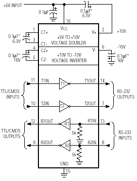
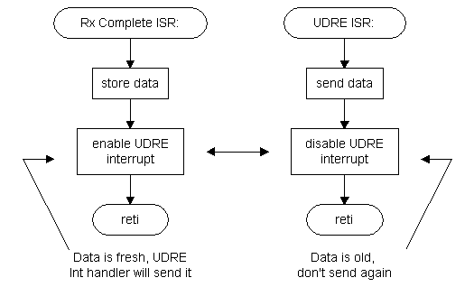

Setting up the UART
[ Voltage Level Conversion ] [ The Cable ] [ UART Setup ] [ Code ]
Voltage Level Conversion
The AVR UART is a very powerful peripheral. You can use it to send messages to your PC and let a terminal program display them (for debugging purposes or as a user interface), or to communicate with a self-written program for analyzing logged data. As the UART heavily relies on timing (for generating the correct baud rate), you have to know which frequency your AVR is running at and what speed you need for communications.
It's also important to use the correct driver circuit between your AVR and the PC, as the COM port is using RS232 voltage levels. They are different from CMOS levels and without a driver chip you'll fry your AVR. That's bad. So use a driver chip. A widely used one is the MAX232 which just needs some caps and supply voltage to work. Here's a diagram of it:

WARNING! This is a diagram of the MAX202 from the MAX232 datasheet. Use 10µF caps for the MAX232! The one connected from VCC to ground should be 0.1µF though.
For the UART to work you need one driver per direction only: One Transmitter (T1 or T2 in the diagram) from AVR to PC and one receiver (R1 or R2 in the diagram) from PC to AVR.
The Cable from your circuit to the PC will most probably have a 9-pin D-type connector. The signals we need are Ground, Receive Data and Transmit Data. Below is a table of the necessary connections. The signal name refers to the PC side.
| Signal | PC side (male) | Device Side (female) | MAX232 pin to connector | AVR pin to MAX232 |
|---|---|---|---|---|
|
Ground
|
5
|
5
|
15
|
(ground)
|
|
Tx
|
3
|
3
|
13 or 8
|
RxD
|
|
Rx
|
2
|
2
|
14 or 7
|
TxD
|
To find out which pin of the connector has which number, have a close look at it: Most have tiny numbers next to the pins on the plastic isolator. For more information, see www.hardwarebook.net. If your PC has a 25-pin connector you'll find the pinouts for it on that site as well.
I will not go into detail about the RS232 protocol. The AVR datasheets have a small description of it (in the 2313 datasheet see the "sampling received data" figure), which should be enough for a start. If you want more, have a look at www.beyondlogic.org.
Setting up the UART is not very hard. You need to know the following:
- Clock frequency of your AVR
- desired baud rate
- data format (how many bits per transmission)
The clock frequency and the desired baud rate are used for calculating the UBRR value. With the formula from the datasheet or the AVR Architecture -> UART page this can be calculated in no time. Assuming a speed 3.6864 MHz and a desired baud rate of 38400, we get a value of 5. This must be written to UBRR
The data format will usually be 8 bits per transfer. Sometimes 9 bits are used, which the 2313 supports as well. The megas even have more options, but the 8-bit format is enough for now.
The next question we have to answer is: Interrupt driven or polling? Interrupt driven is of course more efficient, but when sending strings or packets of data, polling is easier, as an interrupt driven UART needs software buffers for efficient string transfers. These can be added, but then it's not a "simple example" any more :-) Below the polling example, you will find an interrupt driven version of it.
The example code below shows how to use polling. As we don't use interrupts, these can be left disabled. The transmitter and receiver have to be enabled though in order to make usage of the UART possible.
The Setup Code
| setup_uart: ldi r16, 5 out UBRR, r16 ldi r16, 0b00011000 out UCR, r16 ret |
; we can call this as a subroutine during intitialisation ; write correct clock divider value ; to UBRR ; ; set Rx and Tx enable bits ; write them to the UART Control Register ; ; done. Nothing more to do! |
So what do we want the AVR to do with the UART. A very simple task is to echo back the data we received from the PC. When typing in characters in a terminal, we should receive copies from it, so everything we type in should show up twice (assuming a local echo).
For receiving data we wait until the RXC flag in USR (UART Status Register) is set and then read that data from UDR (UART Data Register). Then we can transmit it again by writing it to UDR. If we write data to UDR while a byte is received that won't hurt, as the UDR is divided into two registers, one for each direction. God huh? Before writing it to UDR we need for the UDRE flag to be set, because it indicates when a character is transferred to the UART transfer shift register. Then a new character can be written to UDR.
So, enough theory, here's the code. Don't forget to include the 2313def.inc file and the setup routine above!
| .org 0x0000 rjmp reset reset: ldi r16, low(RAMEND) out SPL, r16 rcall setup_uart loop: rcall rx_uart rcall tx_uart rjmp loop rx_uart: in r16, USR sbrs r16, RXC rjmp rx_uart in r16, UDR ret tx_uart: in r17, USR sbrs r17, UDRE rjmp tx_uart out UDR, r16 ret ;include setup_uart here! |
; reset interrupt vector ; for startup ; ; ; initialise Stack Pointer ; ; ; initialise the UART ; ; then loop back the characters received from the PC ; receive data ; and transmit it again ; and do this forever ; ; receive routine: ; get UART Status Register ; and see if Rx Complete flag is set ; if not, go back to rx_uart ; ; data came in. RXC is cleared by reading UDR, UDR is stored in r16 ; return ; ; transmit routine: ; get UART Status Register (r17 this time, the data is in r16!!!) ; and see if UDR is free for transfer ; if not, go back to rx_uart ; ; send the data, UDRE will be cleared by hardware ; return ; ; |
After thinking about the code a bit you might come to the conclusion that the status register check for transmitting data is not necessary, as the data is coming in at very low speed (as fast as you can type) and therefore will be echoed back before the next character comes and can be transmitted again. I included this for showing how this check is done, because other applications might send data at higher speed. This is the case when sending data packets or strings. In that case, the application would send a character, get the next one from memory and send it as soon as possible.
Interrupt Driven Examples
The interrupt driven example doesn't hang around in loops checking if data had come in. Instead, the Rx Complete interrupt is used to determine when data is ready. It is then echoed back by the RXC ISR. To make the interrupt driven echo possible, the RXC Interrupt has to enabled (RXCIE in UCR is set) and, of course, global interrupts have to be allowed as well. The correct interrupt vector has to be installed, too.
| .org 0x0000 rjmp reset .org 0x0007 rjmp UART_RXC reset: ldi r16, low(RAMEND) out SPL, r16 ldi r16, 5 out UBRR, r16 ldi r16, 0b10011000 out UCR, r16 sei loop: rjmp loop UART_RXC: in r17, UDR out UDR, r17 reti |
; reset vector address: ; handle reset ; UART Receive Complete Interrupt vector: ; go to UART_RXC ; ; jump here at reset ; stack setup ; ; ; clock divider value for 38400 baud @ 3.6864 MHz ; ; enable Rx Complete Int, enable receiver and transmitter ; ; ; enable interrupts ; ; loop here (do nothing) ; ; ; UART Rx complete interrupt handler: ; get data we received ; write it to UDR ; return from int |
This examle, apart from being interrupt driven, is different from the first one: The ISR doesn't check if it's allowed to write to UDR, so collisions can occur if the previous character wasn't transferred yet. This could be done with an ISR for the UART Data Register Empty interrupt. The flow chart shows how the two ISR would communicate via the UDRE Interrupt Enable (UDRIE) bit:

| .org 0x0000 rjmp reset .org 0x0007 rjmp UART_RXC rjmp UART_DRE reset: ldi r16, low(RAMEND) out SPL, r16 ldi r16, 5 out UBRR, r16 ldi r16, 0b10011000 out UCR, r16 sei loop: rjmp loop UART_RXC: in r17, UDR in r16, UCR sbr r16, 0b00100000 out UCR, r16 reti UART_DRE: in r16, UCR cbr r16, 0b00100000 out UCR, r16 out UDR, r17 reti |
; same as above ; ; ; here's the Rx Complete vector ; here's the UDRE Int vector (.org 0x0008) ; ; ; stack setup ; ; ; set baud rate ; ; enable Rx and Tx, enable Rx Complete Interrupt ; UDRIE is NOT(!) set!!! This is done by the RXC ISR ; ; enable Interrupts ; ; do nothing as long as power is present ; ; ; UART Rx Complete ISR: ; get data ; get UART Control Register ; and set UDRIE bit; ; store UART Control Register again ; and that's it. ; ; UART Data Register Empty ISR: Will be called as soon as UART_RXC ; returns! Get UCR ; clear UDRIE bit ; and store UCR again ; send data ; return from ISR |
These three examples should have given you an idea about UART usage and interrupt setup issues. The last example (with RXC and UDRE interrupts) is almost ready for FIFO buffer usage.